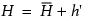
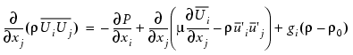
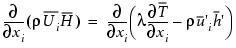
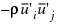
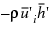
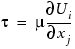
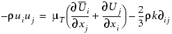

The Formula Chosen for the Estimation of the Level of Turbulence Viscosity
The same applies to all physical dimensions of the control volume cells (dxi) terms. They would have to be as small as that known as the Kolmogarov scale, which decreases non-linearly with an increase in the Reynolds number.
To overcome these limitations, variables are split into a mean and fluctuating component, that is:
 | (1) |
|---|
These are then substituted back into the instantaneous momentum equation producing the following:
 | (2) |
|---|
This is known as the time averaged momentum equation. A similar equation exists for the enthalpy equation:
 | (3) |
|---|
The extra terms are produced by this substitution are:
Reynolds stress = 
Reynolds flux = 
A turbulent flow is characterized by the dominance of diffusion due to the Reynolds stresses and fluxes over the diffusion due to the laminar viscosity or laminar diffusivity of the fluid.
The introduction of the Reynolds stresses and fluxes after decomposition of the turbulent fluctuating variables means that the equation set is now not closed. Some form of closure is required to model these fluxes and stresses. There have been a wide range of methods used to do this, varying from the most simple zero-equation models to the much more complex Reynolds stress transport equations. Figure 1 shows how these turbulence models relate to each other.

At the center of the zero- and two-equation models lies the analogy that where a laminar stress exists, then so can an equivalent turbulent stress (that is, Reynolds stress). A laminar shear stress is defined as:
 | (4) |
|---|
So, if a fluid can have a laminar viscosity, μ, then a turbulent flow should have a turbulent or eddy viscosity, μT. By using the eddy viscosity hypothesis, which Boussinesq proposed, we can relate the Reynolds stress to the mean strain by:
 | (5) |
|---|
A zero equation turbulence model either sets a constant value of the eddy viscosity or deduces it as an algebraic function of flow parameters. The zero equation turbulent model will therefore be referenced as an algebraic turbulent model.
The two equation model uses two differential transport equations to predict the eddy viscosity on a cell by cell basis.
The main limitation imposed at this stage by Equation 5 is that the eddy viscosity is the same in all directions at any point. Now, where this may be true of laminar viscosity, which is a property of the fluid, it may not be true of turbulent viscosity, which is effectively a property of the flow. Therefore, this eddy viscosity can have differing values in relation to differing Reynolds stresses. This occurs when the turbulence is said to be anisotropic. Conditions that under certain circumstances may cause anisotropy, and thus could invalidate the isotropic assumption of Equation 5, include extreme streamline curvature, swirl, adverse pressure gradients, and buoyancy.